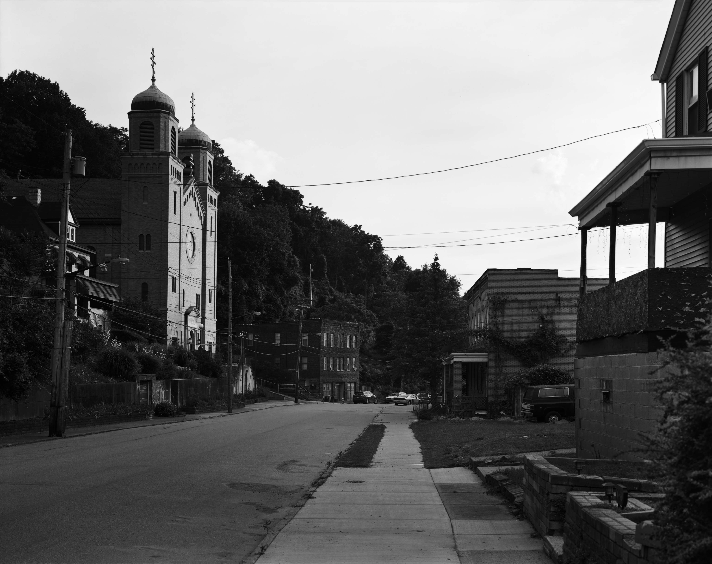
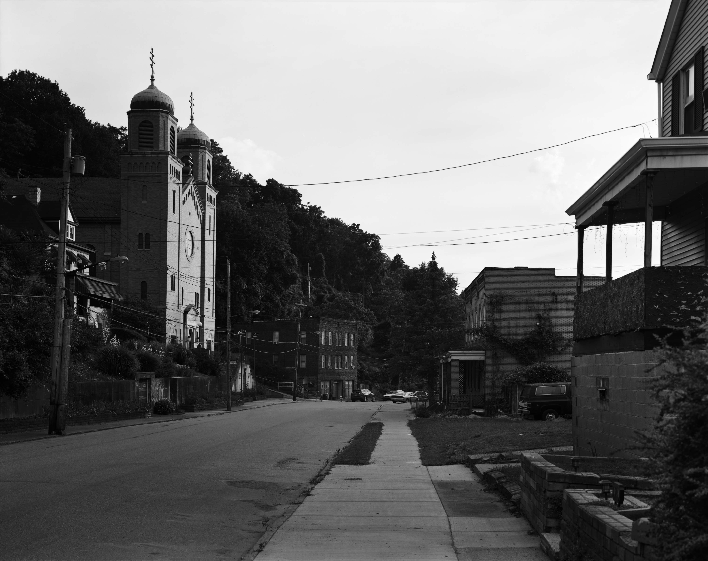

Running away, coming home, a warm sip of tea.
Creating an image not to acquire, but to consider objects and their relationships with one another. Those relationships, however rendered, always in stark relief to the formlessness of the imagination which captured it. This formlessness makes meaning out of habit.
Imagination slowing down and speeding up time and objects, then ricocheting between a space and myself. I carry my imagination, hidden behind a veil, and through catching an image I make my presence observable.
What does it mean to be a person as a biological entity, a theater, and a resilient persona?
Catching images across functionally infinite space and time. I am decidedly not infinite. The formlessness of my imagination cannot make up the distance between myself and the universe, myself, and you.
Even so, I make meaning out of habit. Even so, I erode constantly. For now, we are all in perpetual revolution with one another. Even so, I do not know you, but we see each other’s evidence, if we are lucky.
Now, you and your gaze, slowing down and speeding up, ricocheting against the plane of the image. You are hidden behind the veil of the image to me. We were not there together, nor are we here together.
Erosion and accretion, chirally interlaced. The chance of encircling a glint of meaning which we share, in our travels. Light shining through a hole in the curtain.
A warm sip of tea, coming home, running away again.
—Nels Fichera [4/26/2022]